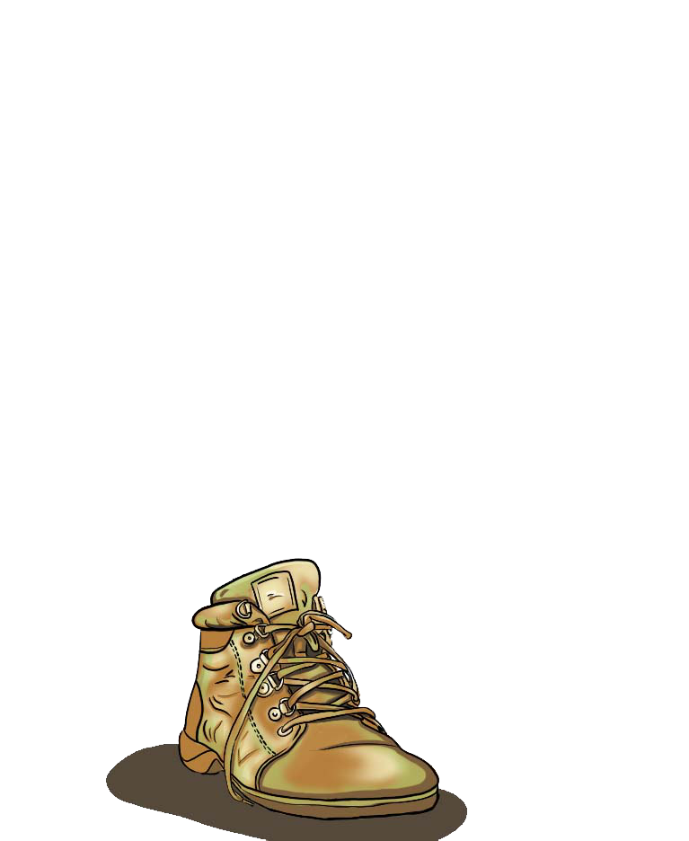

$<!DOCTYPE html>

<html>
  <head>
    <meta charset="utf-8">
    <meta name="viewport" content="width=device-width, initial-scale=1">
    <meta http-equiv="X-UA-Compatible" content="IE=edge">
    <script src="https://ajax.googleapis.com/ajax/libs/jquery/3.4.1/jquery.min.js"></script>
    <title>
      Project 2
    </title>

    <style>
      p, button {
        font-size: 1vw;
        margin: .5vw;
        font-family: Courier
        }

      a {
        display: block;
        }

      button {
        display: block;
        cursor: pointer;
        border-radius: 5px;
        padding: 5px;
        }

      button:hover {
        box-shadow: 0 5px 7px 0 rgba(0, 0, 0, 0.2), 0 6px 20px 0 rgba(0, 0, 0, 0.19);
        }

      button:active {
        background-color: thistle;
        }

      .clock {
        font-size: 6.5vw;
        text-align: center;
        }

        img {
          width: auto;
          display: none;
          }


    </style>

  </head>

  <body>
    <br>
    <div><center>
      <span style="font-size: 4vw">Growth</span>
    </center></div><br>
        <div style="margin-left: 43.5%">
          <button class = "start_button", style="float: left">
              Start/Stop
          </button>
          <button class="reset", style="float: left">
               Reset
          </button></div>
        <br><br><br>
        <div class="clock"></div>
    <!-- viewbox: left up grow/shrink length??-->
    <svg viewBox="0 30 200 100" xmlns="http://www.w3.org/2000/svg">
    <svg width="190" height="160" xmlns="http://www.w3.org/2000/svg">
      <path d="M -5 100 Q 95 -25 200 110" stroke="transparent" fill="transparent"/>
    </svg>
      <circle r="7" fill="yellow">
        <animateMotion dur="150s"
          repeatCount="indefinite";
          animation-iteration-count= "infinite";
          animation-direction= "alternate";
          animation-timing-funtion="ease-in-out";
          begin = "3s";
          path="M -5 100 Q 95 -25 200 110"/>
      </circle>
      
      
      
      
      
      
      
      
      
      
      
      
      
      
      
      
      
      
      
      
      
      
      
    </svg>
    <br><br>
    <center>
      <a href = "Projects.html">Projects</a>&nbsp;&nbsp;&nbsp;
      <a href = "#top">Back to Top</a>&nbsp;&nbsp;&nbsp;
      <a href = "index.html">There's No Place Like Home</a></bottom></div>
    </center>

  <script> //1. for color change intervals...somehow apply to background? and time of day...w img of sun moving across
    //declaring universal variables
      var running;
      var seconds = 0;
      var start_timer;

    //making an increment function: to increase the value of the variable: seconds
      function increment() {
        seconds = seconds + 1;
        console.log(seconds);
        //making the function color WITHIN increment()
        color();
      }

      //defining the color function, changing background depending on sec passed
        function color() {
          seconds = seconds % 150;
          if (seconds == 1) { //can JS indicate any increments? like repeate this color at each multiple of 3, etc...so dont have to rewrite more color code...
            $('body').css('background-color', '#422556');//1
            $('#plant22').css('display', 'none');
            $('#plant0').css('display', 'block');
          } else if (seconds == 5) {
            $('body').css('background-color', '#813259');//2
            $('#plant0').css('display', 'none');
            $('#plant1').css('display', 'block');
          } else if (seconds == 10) {
            $('body').css('background-color', '#EA7676' );//3
            $('#plant1').css('display', 'none'); //idk why it not work
            $('#plant2').css('display', 'block');
          } else if (seconds == 15) {
            $('body').css('background-color', '#F2A044');//4
            $('#plant2').css('display', 'none');
            $('#plant3').css('display', 'block');
          } else if (seconds == 25) {
            $('body').css('background-color', '#FFD966');//5
            $('#plant3').css('display', 'none');
            $('#plant4').css('display', 'block');
          } else if (seconds == 35) {
            $('body').css('background-color', '#FAFFCC');//6
            $('#plant4').css('display', 'none');
            $('#plant5').css('display', 'block');
          } else if (seconds == 45) {
            $('body').css('background-color', '#E2F4C4');//7
            $('#plant5').css('display', 'none');
            $('#plant6').css('display', 'block');
          } else if (seconds == 55) {
            $('body').css('background-color', '#C4F4D8');//8
            $('#plant6').css('display', 'none');
            $('#plant7').css('display', 'block');
          } else if (seconds == 65) {
            $('body').css('background-color', '#C4F4E7');//9
            $('#plant7').css('display', 'none');
            $('#plant8').css('display', 'block');
          } else if (seconds == 75) {
            $('body').css('background-color', '#99E7D2');//10
            $('#plant8').css('display', 'none');
            $('#plant9').css('display', 'block');
          } else if (seconds == 85) {
            $('body').css('background-color', '#80E2E7');//11
            $('#plant9').css('display', 'none');
            $('#plant10').css('display', 'block');
          } else if (seconds == 95) {
            $('body').css('background-color', '#92DDF7');//12
            $('#plant10').css('display', 'none');
            $('#plant11').css('display', 'block');
          } else if (seconds == 100) {
            $('body').css('background-color', '#B1E4F6');//13
            $('#plant11').css('display', 'none');
            $('#plant12').css('display', 'block');
          } else if (seconds == 105) {
            $('body').css('background-color', '#B5DBD5');//14
            $('#plant12').css('display', 'none');
            $('#plant13').css('display', 'block');
          } else if (seconds == 110) {
            $('body').css('background-color', '#FFE599');//15
            $('#plant13').css('display', 'none');
            $('#plant14').css('display', 'block');
          } else if (seconds == 115) {
            $('body').css('background-color', '#E7A5A2');//16
            $('#plant14').css('display', 'none');
            $('#plant15').css('display', 'block');
          } else if (seconds == 120) {
            $('body').css('background-color', '#E7A2DF');//17
            $('#plant15').css('display', 'none');
            $('#plant16').css('display', 'block');
          } else if (seconds == 125) {
            $('body').css('background-color', '#7A4996');//18
            $('#plant16').css('display', 'none');
            $('#plant17').css('display', 'block');
          } else if (seconds == 130) {
            $('body').css('background-color', '#563E80');//19
            $('#plant17').css('display', 'none');
            $('#plant18').css('display', 'block');
          } else if (seconds == 135) {
            $('body').css('background-color', '#3E2D74');//20
            $('#plant18').css('display', 'none');
            $('#plant19').css('display', 'block');
          } else if (seconds == 140) {
            $('body').css('background-color', '#2E2E78');//21
            $('#plant19').css('display', 'none');
            $('#plant20').css('display', 'block');
          } else if (seconds == 145) {
            $('body').css('background-color', '#242463'); //22
            $('#plant20').css('display', 'none');
            $('#plant21').css('display', 'block');
          } else if (seconds == 150) {
            $('body').css('background-color', '#0D0D3A'); //23
            $('#plant21').css('display', 'none');
            $('#plant22').css('display', 'block');
          }}
      //function: start --> 1. set running variable to true & starts timer via setInterval via function: increment
      function start() {
        running = true;
        start_timer = setInterval(increment, 1000); //1000 (milliseconds)= 1 sec
      }

      //function: stop does the opposite, makes running = F and clears interval
      function stop() {
        running = false;
        clearInterval(start_timer);
      }

      $(document).ready(function(){
          //what to do when element w class "start button" clicked
          $('.start_button').click(function(){
            //check if running == T
            if (running) {
              //if T, call the function stop to stop timer
              stop();
            }
            //but if running == F, call function to start
            else {
              start()
            }
            console.log("timer is running: " + running);
          });

          //what to do when reset is clicked!
          $('.reset').click(function(){
            //if timer running, call STOP function
            if (running){
              stop();
            }
            //set varaible seconds back to 0!
            seconds = 0;
            //turn body back to ORIGINAL color
            $('body').css('background-color', 'initial');
            $("body").css("background-image", "none");
            $('img').hide();
            console.log("timer reset; seconds =" + seconds);
          });
      });
</script>
<script>

  //2. for the clock

  function clock() {// We create a new Date object and assign it to a variable called "time".
  var time = new Date(),

      // Access the "getHours" method on the Date object with the dot accessor.
      hours = time.getHours(),

      // Access the "getMinutes" method with the dot accessor.
      minutes = time.getMinutes(),


      seconds = time.getSeconds();

  document.querySelectorAll('.clock')[0].innerHTML = harold(hours) + ":" + harold(minutes) + ":" + harold(seconds);

    function harold(standIn) {
      if (standIn < 10) {
        standIn = '0' + standIn
      }
      return standIn;
    }
  }
  setInterval(clock, 1000);
  </script>

</html>
